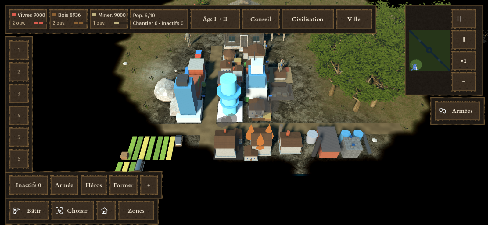
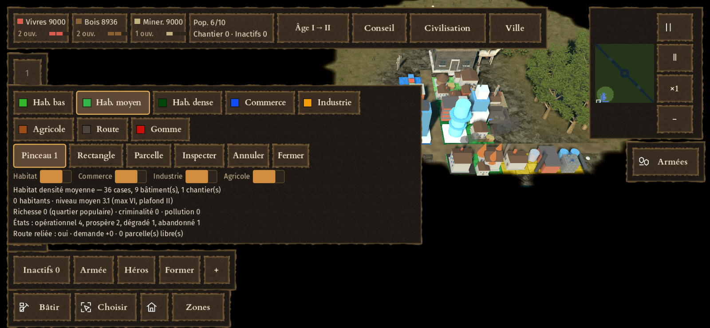
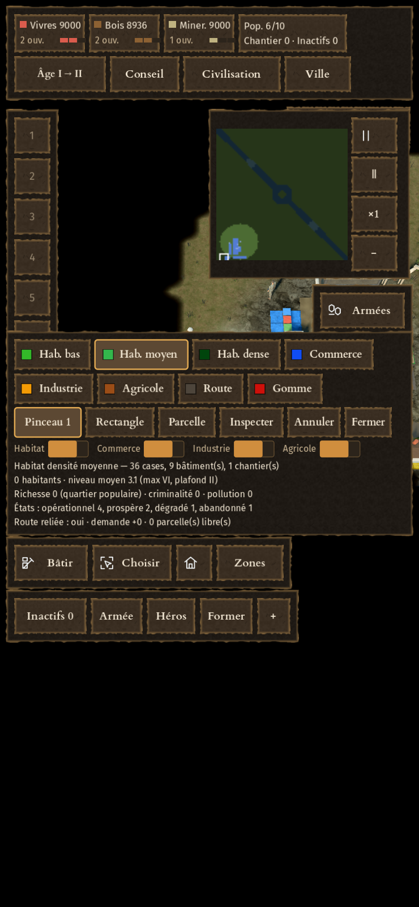

PROJET COMPLET · 0.19.0 CANDIDATE · LOT A · ANDROID NOT_RUN
Vous peignez les zones ; la ville se construit seule.
Captures réelles du jeu dans Godot 4.7.2 (OpenGL logiciel sur Linux). Paysage : 1600×740 ; portrait : 740×1600. Le quartier montré est préparé pour la capture (bâtiments de plusieurs âges, niveaux et états réunis côte à côte) ; le rendu, les routes et le calque sont ceux du jeu.
Un quartier
Routes reliées au centre, habitat, commerce, industrie, champs ; architectures de plusieurs âges ; un chantier, des ruines, un incendie
Le mode Zonage
Types de zone, outils, demande, fiche du quartier ; calque coloré seulement dans ce mode
En portrait
Mêmes boutons, barre en pleine largeur
Aucun APK n’accompagne cette version. Essais sur téléphone : NOT_RUN. Aucun contenu d’un jeu existant n’a été repris.